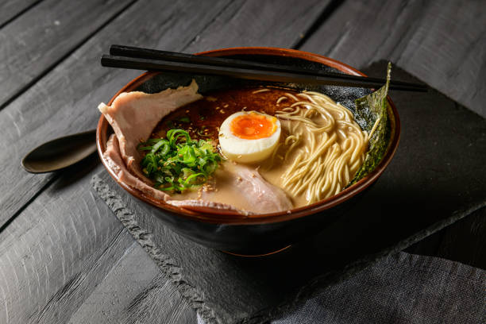

Home
Ramen

This comforting bowl of ramen features tender noodles in a rich, savory broth, topped with slices of juicy pork, a soft-boiled egg, fresh scallions, and crisp vegetables. It's a flavorful and satisfying meal perfect for any time of day.
Ingredients
- 3 ½ cups vegetable broth
- 1 (3.5 ounce) package ramen noodles with dried vegetables
- 2 teaspoons soy sauce
- ½ teaspoon chili oil
- ½ teaspoon minced fresh ginger root
- 1 teaspoon sesame oil
- 2 green onions, sliced
Steps
- Combine broth and noodles in a medium saucepan; cover and bring to a boil over high heat, stirring to break up noodles.
- Reduce heat to medium and add soy sauce, chili oil, and ginger. Simmer, uncovered, for 10 minutes.
- Stir in sesame oil.
- Garnish with green onions and serve.
Nutrition Facts
- Calories: 291
- Carbs: 42g
- Fat: 10g
- Protein: 7g